頑張らないために頑張る
ゆるく頑張ります
gradioでお手軽にnotebookをwebアプリ化する
概要
gradioとはPython用のパッケージであり、Jupyter Notebook上で用いることによりwebアプリケーションのようなUIを実装できます。これにより、Notebookで作成した機械学習モデルを簡単なwebアプリ化でき、公開できる限度はあるものの作成したアプリケーションを独自のURLでwebアプリとして共有できるという優れものです。
つまり、学習モデルというバックエンドさえ作っておけば、JSでフロントエンドを用意しなくてもgradioがその肩代わりしてくれるわけです。しかも、UIを構築する際も少ないコードで済むため、「作成したモデルの入出力をコードではなくGUIで行いたい。けどそこまで凝ったUIを作る必要はない」という場合に効果を発揮するでしょう。
Google Collaboratory（以下、Colab）上でも動作するため、Colabで利用するとより実装が楽かもしれません。共有するのも、Colabでのソース本体でなく生成したwebアプリを共有すればいいのもポイント高いです。
ここでは利用するシチュエーションが多いと思われるColabで、gradioを使用する方法について記述してみます。
導入方法
導入は簡単で、他のPython用パッケージと同様にpipでインストールすれば問題ありません。gradioが要求する動作環境はPython 3.7以上なので、たいていの環境ではフツーに導入できるはずです。
!pip install gradio新規のセルに上記のコードを記述しておけばインストールしてくれます。
簡単な入出力サンプル
ここでは、入力された文字列について簡単な編集を行って出力する機能を実装してみます。
import gradio as gr
def greet(name):
return "Hello " + name + "!!"
demo = gr.Interface(fn=greet, inputs="text", outputs="text")
demo.launch()処理自体は簡単で、入力された名前に挨拶を付与するだけのものです。この場合、入出力のインターフェイスを用意するのはgradio.Interface()の1行で問題ありません。あとは、UIのインスタンスをlaunch()すると、Colab上に入出力のフロントが表示されます。コレ、地味にちゃんと日本語表示されるんですよね、何もコードの中で指定しなくても。
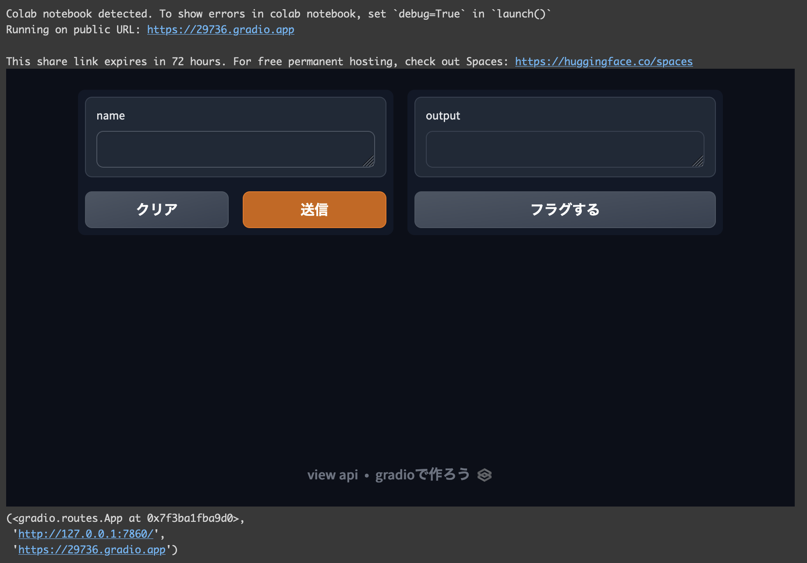
実際にColab上で実行してみると上記のようなに表示されます。
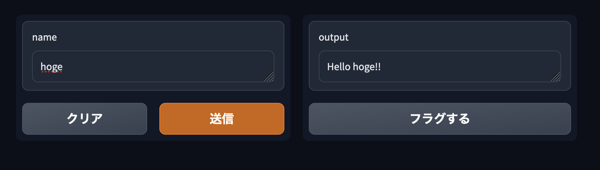
名前を入力して「送信」を押すと、右側に編集された文字列が表示されます。
また、このとき生成されるURLは72時間の間保持されます。このURLは、gradioを利用して作成したUIをColabの外部で利用できるものです。つまり、Colab上作成した機能にgradioで簡易的なUIを作りさえすれば、あとはこのURLを共有することでwebアプリを実装できます。
72時間しかURLが有効じゃないので、恒久的な利用には向きません。が、「とりあえず利用してみたい」という短期的なニーズを満たすための用途としては素晴らしい機能だと言えるのではないでしょうか。
上記のようにブラウザでアクセスすれば、Colab上じゃなくても実行できます。
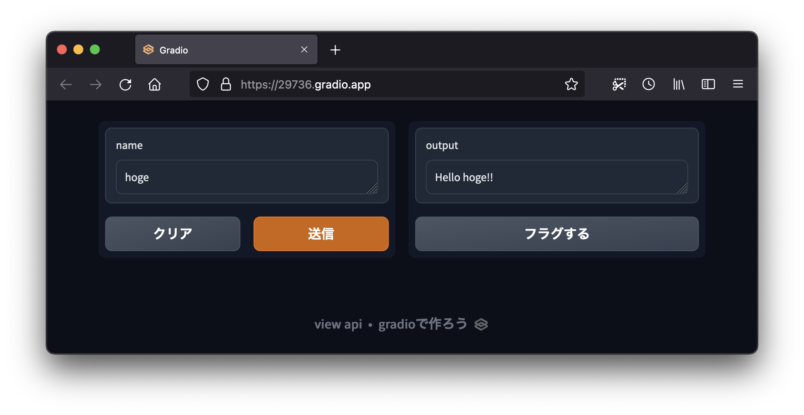
そしてちゃんとColab上と同様に利用できます。
画像を入出力としたサンプル
簡易的とはいえちゃんとUIを実装できるので、テキストだけでなく画像などのデータを入出力の対象にもできます。
import numpy as np
import gradio as gr
def sepia(input_img):
sepia_filter = np.array([
[0.393, 0.769, 0.189],
[0.349, 0.686, 0.168],
[0.272, 0.534, 0.131]
])
sepia_img = input_img.dot(sepia_filter.T)
sepia_img /= sepia_img.max()
return sepia_img
demo = gr.Interface(sepia, gr.Image(shape=(200, 200)), "image")
demo.launch()当たり前のようにテキストのオブジェクトも入出力に採用できるので、ここでは画像を入力してセピアカラーに変更するコードを実行し結果を出力します。
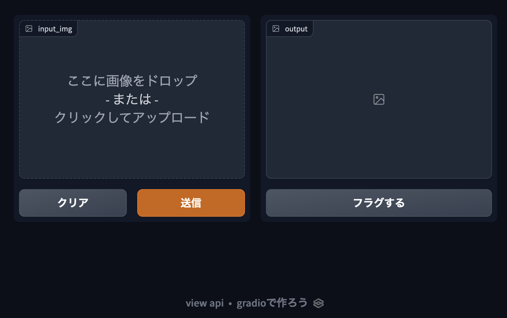
実行すると上記のような画面が表示されます。左側の枠にドラッグアンドドロップなどで画像を入力し、「送信」を押すと処理を実行して結果を返してくれます。
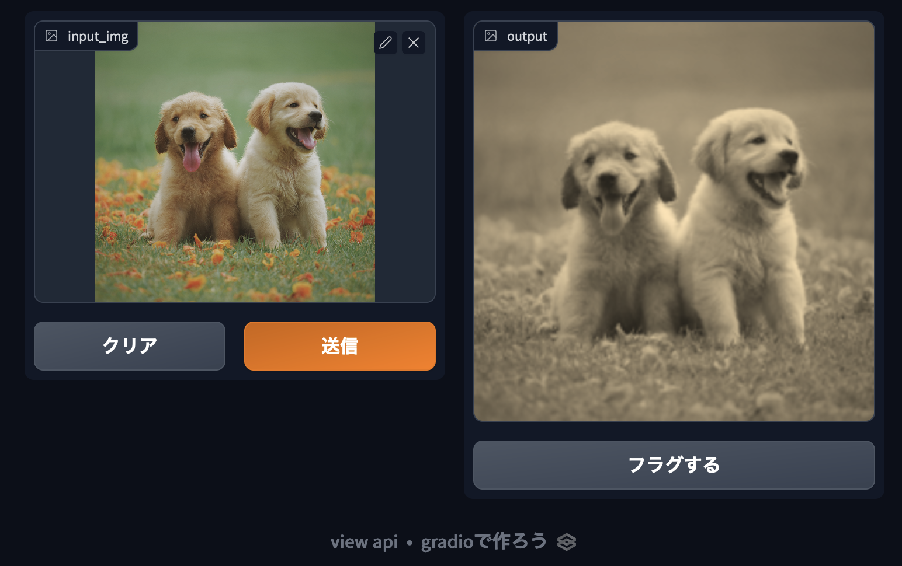
適当な画像で処理を実行してみました。
他のコンポーネントを試す
テキストや画像の入出力が簡単に実装できるだけでも助かりますが、チェックボックスやスライダーなどのコンポーネントも実装できます。これらを入力のUIとして利用すれば、より使いやすいUIにできるでしょう。
import numpy as np
import gradio as gr
from PIL import Image
def img_process(input_img, is_sepia_filter, is_negative_filter, slider):
process_img = np.array(input_img)
if is_sepia_filter:
sepia_filter = np.array([
[0.393, 0.769, 0.189],
[0.349, 0.686, 0.168],
[0.272, 0.534, 0.131]
])
sepia_img = process_img.dot(sepia_filter.T)
sepia_img /= sepia_img.max()
process_img = sepia_img
if is_negative_filter:
process_img = process_img.max() - process_img
return process_img, slider * 2
demo = gr.Interface(fn=img_process,
inputs=[gr.Image(shape=(200, 200)), 'checkbox', 'checkbox', gr.Slider(0, 100)],
outputs=['image', 'text'])
demo.launch()上記では、画像を指定するコンポーネントの他にチェックボックスとスライダーを実装しています。
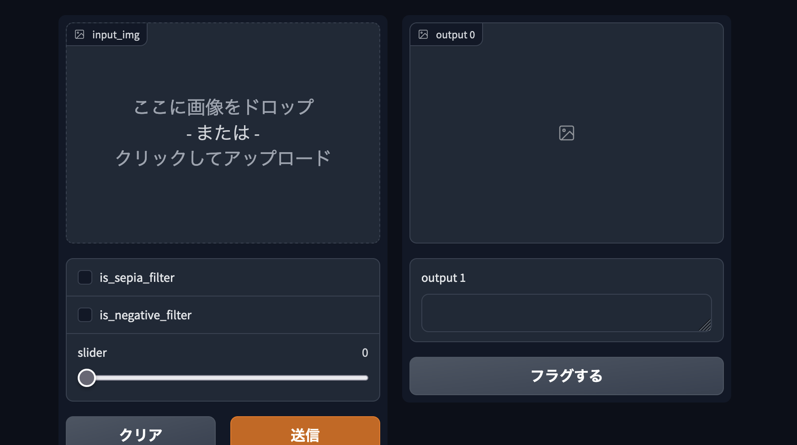
実際に実行してみると、チェックボックスやスライダーにそれぞれ項目が割り当てられているのがわかります。これは、Interface()でインスタンスを宣言する際に、引数として指定した関数であるimg_processの引数と対応しています。
inputsオプションに指定したリストは関数img_processの引数と1つずつ対応しています。つまり、input_imgという引数はUIのImageコンポーネントと紐付いており、引数is_sepia_filterはチェックボックスの1つ目と紐付いています。さらに、入力と同様に出力であるoutputsオプションで指定したリストは、関数img_processの戻り値と1つずつ対応しています。今回は戻り値が処理後の画像と数値の2つで、それらに1つずつ出力のImageコンポーネントとテキストフィールドが対応しています。わかりやすいわー。
このように、gradioはインスタンスの宣言の際に引数と戻り値をUIのコンポーネントと1つずつ紐付けることが可能です。
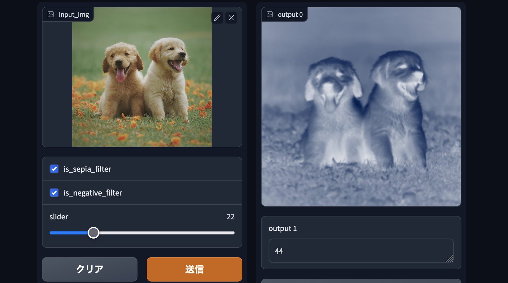
任意の画像をドラッグアンドドロップしてチェックそ送信すると、入力した内容に基づき処理された画像が返ってきます。ここでは、セピアカラー処理したあとにネガポジ反転させています。ここでは1度に両方の処理を実行していますが、それぞれの処理を別個に処理することももちろん可能です。
Interfaceクラスを使わずUIを実装する
今まではUIの実装にInterface()を使ってきました。実際、これを使うだけで関数とUIを紐付けつつ実装が可能なのでめちゃくちゃ有用ではあるのですが、細かい描画の調整ができないというデメリットが存在します。とくにTab()を利用して機能ごとにタブを実装した際、Interface()でUIを実装すると、妙な誤り方をした描画になってしまいます。
import numpy as np
import gradio as gr
def img_process(input_img, is_sepia_filter, is_negative_filter, slider):
process_img = np.array(input_img)
if is_sepia_filter:
sepia_filter = np.array([
[0.393, 0.769, 0.189],
[0.349, 0.686, 0.168],
[0.272, 0.534, 0.131]
])
sepia_img = process_img.dot(sepia_filter.T)
sepia_img /= sepia_img.max()
process_img = sepia_img
if is_negative_filter:
process_img = process_img.max() - process_img
return process_img, slider * 2
def flip_image(x):
return np.fliplr(x)
with gr.Blocks() as demo:
gr.Markdown("Flip text or image files using this demo.")
with gr.Tab("Flip Text"):
gr.Interface(fn=img_process,
inputs=[gr.Image(shape=(200, 200)), 'checkbox', 'checkbox', gr.Slider(0, 100)],
outputs=['image', 'text'])
with gr.Tab("Flip Image"):
with gr.Row():
image_input = gr.Image()
image_output = gr.Image()
image_button = gr.Button("Flip")
with gr.Accordion("Open for More!"):
gr.Markdown("Look at me...")
# text_button.click(flip_text, inputs=text_input, outputs=text_output)
image_button.click(flip_image, inputs=image_input, outputs=image_output)
demo.launch()上記のように、2つの機能をタブ分けして片方はInterface()を使ってUIを実装してみます。
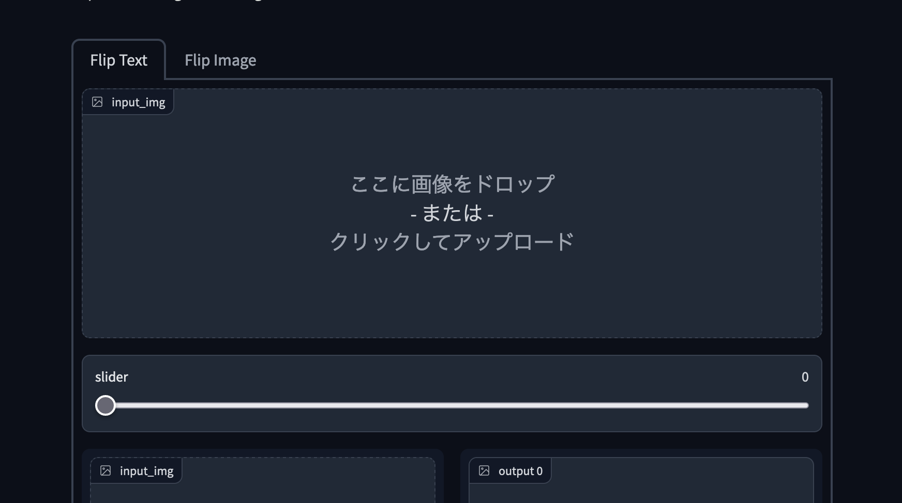
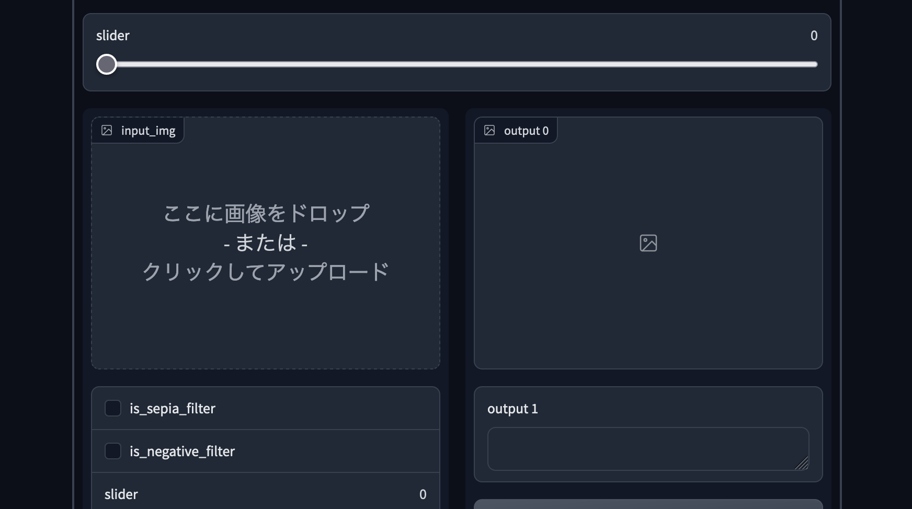

実行してみるとわかりますが、1つしかないはずの画像の入力フィールドやスライダーが、なぜか余計に表示されてしまっています。そのため、このような場合では後述するBlocks()を使った実装のほうが良いかと思います。
ちなみに、このような表示になってしまうのはInterface()が細かい調整を肩代わりしてくれる反面、プログラマー自身による細かい調整ができなくなっているのでは、と個人的に思っています。
次にBlocks()を使って実装してみます。
import numpy as np
import gradio as gr
def img_process(input_img, is_sepia_filter, is_negative_filter, slider):
process_img = np.array(input_img)
if is_sepia_filter:
sepia_filter = np.array([
[0.393, 0.769, 0.189],
[0.349, 0.686, 0.168],
[0.272, 0.534, 0.131]
])
sepia_img = process_img.dot(sepia_filter.T)
sepia_img /= sepia_img.max()
process_img = sepia_img
if is_negative_filter:
process_img = process_img.max() - process_img
return process_img, slider * 2
def flip_image(x):
return np.fliplr(x)
with gr.Blocks() as demo:
gr.Markdown("Process image or flip image files using this demo.")
with gr.Tab("Process image"):
p_image_input = gr.Image()
p_check_sepia = gr.Checkbox(label='is_sepia_filter')
p_check_negative = gr.Checkbox(label='is_negative_filter')
p_image_slider = gr.Slider(0, 100)
p_image_button = gr.Button("Send")
p_image_output = gr.Image()
p_image_output2 = gr.Text()
with gr.Tab("Flip Image"):
with gr.Row():
image_input = gr.Image()
image_output = gr.Image()
image_button = gr.Button("Flip")
with gr.Accordion("Open for More!"):
gr.Markdown("Look at me...")
p_image_button.click(img_process, inputs=[p_image_input, p_check_sepia, p_check_negative, p_image_slider], outputs=[p_image_output, p_image_output2])
image_button.click(flip_image, inputs=image_input, outputs=image_output)
demo.launch()先ほどのケースとは異なり、タブ内のコンポーネントをすべてgradio.クラス名で宣言します。なお、各コンポーネントを宣言する方法はgradioのDocsを参照すると書いてあります。
今度はこの内容で実行してみます。
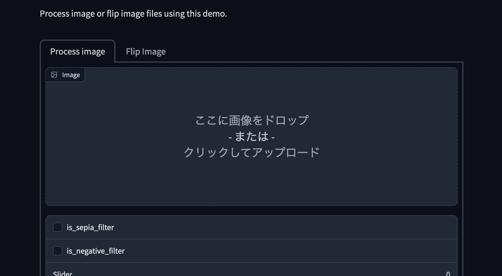
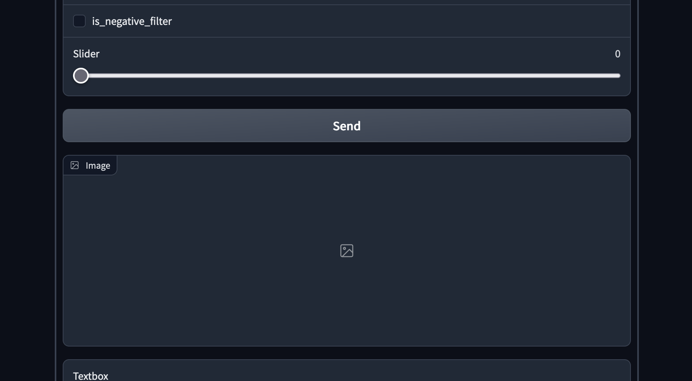
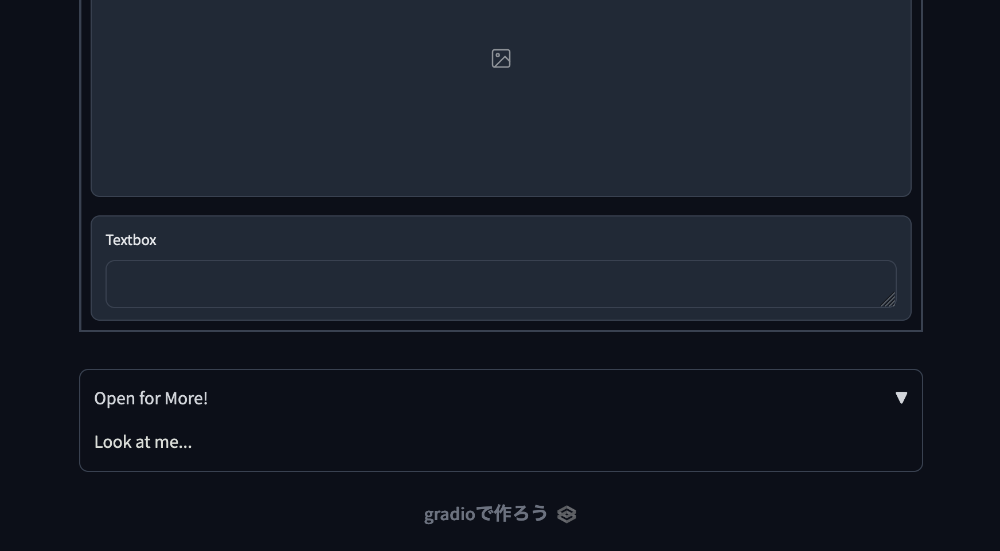
今回は先ほどとは異なり、本来想定した順番と場所でコンポーネントが表示されています。
なお、タブ化されて今までの「左側に入力、右側に出力」というレイアウトとは異なるものの、中身のコンポーネントは今までと同様なので操作方法も変わりません。
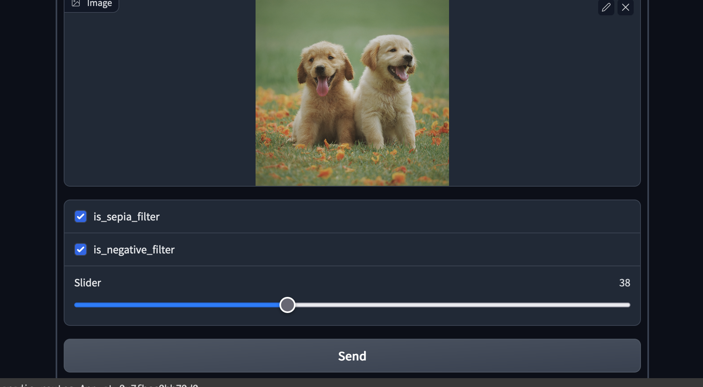
画像をドラッグアンドドロップで入力し、必要なチェックボックスにチェックしスライダーを適当に動かしてみます。その後「Send」ボタンを押します。
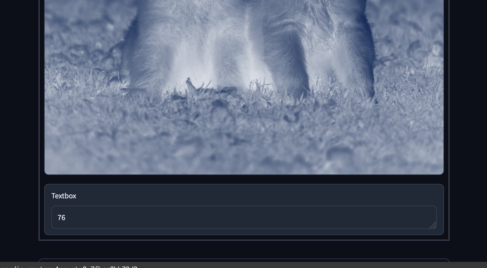
Colabの表示スペースが少ないために出力された画像が見切れてしまっていますが、ちゃんと動作しています。
まとめ
なにこれ簡単・・・。
バックエンドはできたからとりあえず簡単なUIがほしいってときに、「簡単なコードでUI実装できる」「案外実装できる機能多い」「webアプリとして公開できる」っていうのは、かなりの利点だと思うんですよね。Colabでの開発のお供に利用してみようかなと思います。